此篇將會介紹如何使用 Heroku 架設一台伺服器，作為 LineBot 的 webhook server。使用的語言是 Node.js，只需要在程式內撰寫你的邏輯，便可以讓你的 LineBot 更有智慧的和你聊天唷！
開始吧！
事前準備
此篇文章會需要用到 Node.js 和 Git，請務必先下載和安裝好哦～
Node.js: https://nodejs.org/en/
Git: https://git-scm.com/downloads
架設一台 Heroku 伺服器
什麼是 Heroku ?
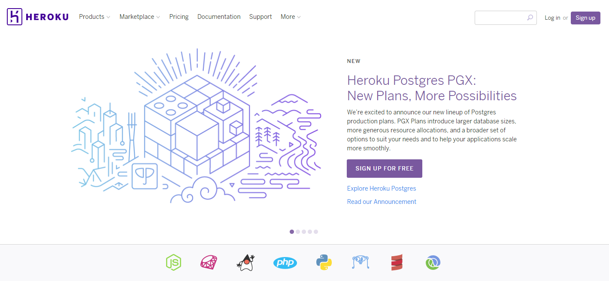
Heroku 是一個租用伺服器的雲端服務，我們可以租用伺服器來執行我們撰寫的程式。他就像是 AWS、Azure、GCP 等等的雲端服務大廠，而 Heroku 有提供我們一些免費配額讓我們租用一些小伺服器，雖然這些小伺服器會受到一些限制，但是要用來玩玩看 LineBot 已經很足夠了哦！
關於 Heroku 的免費配額請參考他們的官方網站：https://devcenter.heroku.com/articles/free-dyno-hours
註冊
註冊我想應該就不用多做說明了，就到 Heroku 的網頁上註冊吧～
開啟一台伺服器
首先我們先登入 Heroku！
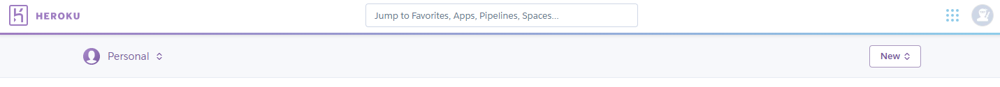
接著我們點選右上角的 New → Create new app 來開啟一台伺服器。
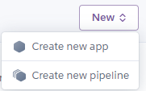
填入這台伺服器的資料，區域的話隨便吧，速度應該不會差太多～
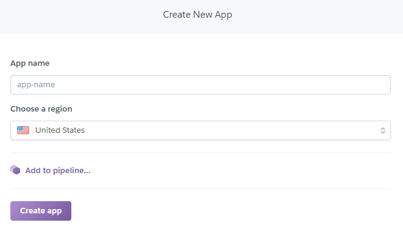
這樣就開啟一台伺服器囉！是不是超級簡單啊～
不過，現在只是有一台伺服器擺在那裡，但我們不知道他是不是活的好好的。
所以我們要寫一個非常簡單的程式，讓我們可以知道這台伺服器運行的好好的哦～
寫一個基本 Node.js 程式
在一個你喜歡的地方開一個資料夾，名字取你喜歡的就好了，這個資料夾就是拿來放我們的伺服器程式的地方哦！我在這邊取名為 LineBotBlueStar。
然後使用 cmd(註1) 進到你的資料夾(註2)吧，我們來做 Node.js 的初始化。
註1 cmd = windows 的命令提示字元。
註2 假設 LineBotBlueStar 資料夾放在 D 槽底下的 GitHub 資料夾 內，你可以這樣下指令。
2
cd GitHub\LineBotBlueStar
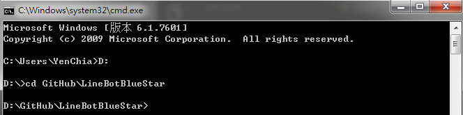
接著，下指令 npm init -y(註3)。
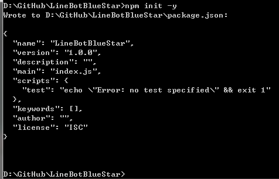
註3 -y 只是因為我懶得輸入一些資訊，想輸入專案資訊的話，可以下 npm init 就可以了哦。
再來，為了簡化過程，我們使用 Node.js 中的 Express，幫助我們建立伺服器的資料架構。1
2
3
4 npm i -g express-generator
express --view=pug
// 接著它會問問題，請輸入y。
destination is not empty, continue? [y/N] y
到這邊為止，你可以看到你的 LineBot 資料夾已經多了文件夾和檔案囉，這麼多檔案代表什麼意思呢？還不用緊張，後面會再慢慢提到，我們先讓伺服器動起來吧！
最後，再下一個指令，幫該安裝的 module 全部裝起來！這個指令可能會跑一小段時間哦～1
npm install
現在我們先在我們的電腦上測試一下伺服器是不是都好了，下指令讓程式跑起來！1
2 npm start
// 此時你的 cmd 會沒辦法再輸入任何指令，這是正確的哦！
再來開你的瀏覽器，輸入網址 http://localhost:3000，如果有看到 Express 的畫面，就代表我們成功囉！
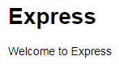
如果想停掉程式，回到 cmd 上按下 Ctrl + C，就可以停掉程式囉！
把程式放到伺服器上
現在我們有伺服器、有程式，接著就是讓他們合體！好啦，其實是把程式上傳到伺服器，讓他執行起來。
怎麼做呢？其實方法有很多，Heroku 的網站也都有教，請看到你的專案的 deploy 頁面
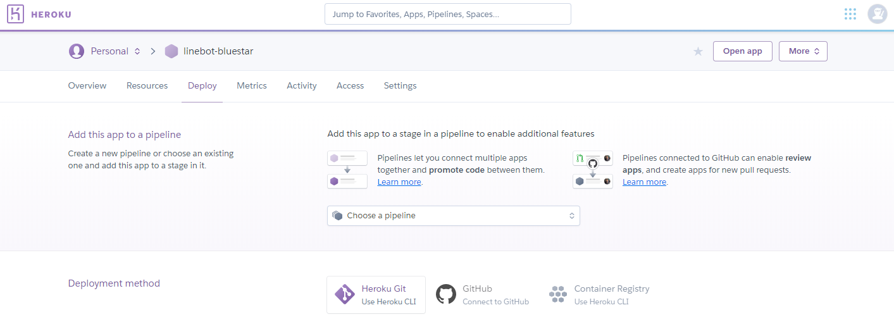
deployment method 列出了上傳的一些方法，可以自己選擇一種來用～
筆者在此篇文章選用第一種 Deploy using Heroku Git
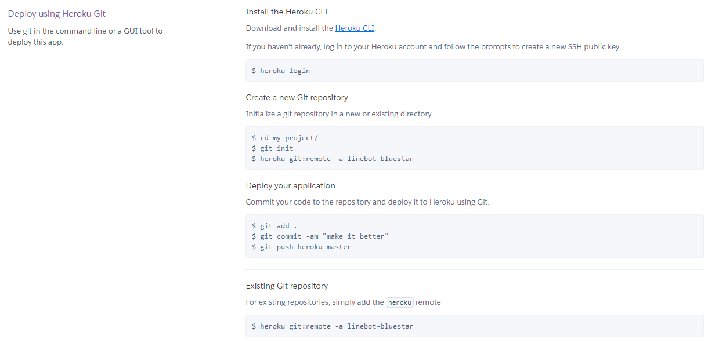
我們就按照網頁寫的步驟來做吧！第一步先下載並安裝 Heroku CLI
安裝好後，然後輸入指令1
Heroku login
如果你剛安裝完 Heroku CLI，馬上就下指令，可能會遇到 Heroku 指令不能辨識的問題。處理方式也很簡單，關掉 cmd 重新開一個就可以囉！記得要下指令回到 LineBot 資料夾哦！
接著，我們繼續按照網頁下指令，先進到你的 LineBot 資料夾，再下指令1
2
3 git init
heroku git:remote -a linebot-bluestar // 記得要換成你的 LineBot 名字
// 完成後你會看到 "set git remote heroku to https://git.heroku.com/linebot-bluestar.git" 的文字哦！
再來，部屬我們的程式上伺服器吧！1
2
3 git add . (這個指令會一段時間)
git commit -am "make it better"
git push heroku master
完成！趕緊來看一下伺服器是不是成功了！
在 Heroku 網頁上的右上角，有一個 Open app 的按鈕，按下去看看是不是也可以看到 Express 呢？如果有，那你成功囉！
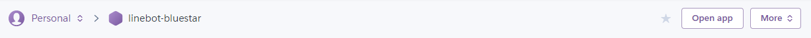
到這邊為止，你已經成功搭建一台伺服器，並在上面執行了 Node.js 程式了！
撰寫 LineBot 程式
安裝 LineBot module
首先我們會使用到 Node.js 中的 linebot 這個 module，先來下載它吧！
一樣到你的 LineBot 資料夾內下指令1
npm i -S linebot
在 Express 建立 Webhook 程式檔案
還記得我們使用了 Express 來幫助我們建立這個專案的檔案結構嗎？這邊簡單介紹一下～
當我們運行這隻程式的時候，會率先執行 app.js 這隻檔案，接著在看 app.js 裡面是怎麼寫的，再來決定去執行哪些檔案哦！
我們要做的是在 routes 這個資料夾內建立一個 webhook.js，並設定 app.js 去串接這支 webhook.js。
如此一來，我們就可以在 webhook.js 裡面寫所有 LineBot 的邏輯了！
那就開始吧！進到 routes 新增一支檔案取名為 webhook.js。然後打開 webhook.js，寫入以下程式碼：1
2
3
4
5
6var express = require('express');
var router = express.Router();
console.log('webhook.js is working');
module.exports = router;
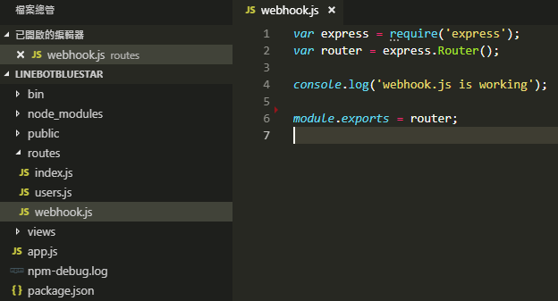
再來打開 app.js，我們要寫入以下程式碼，讓他可以串接這支 webhook.js：1
2
3var webhookRouter = require('./routes/webhook');
app.use('/webhook', webhookRouter);
這兩行要寫在哪裡呢，找跟他們長很像的地方寫上去吧，就像下圖紅框處的位置
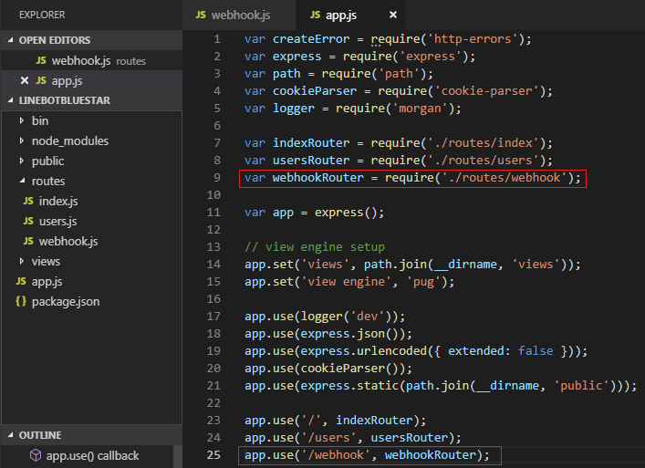
到這邊我們先測試一下是否成功，下指令1
2 npm start
// 如果有看到 "webhook.js is working" 就成功囉！
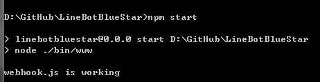
撰寫 LineBot 邏輯
這階段我們終於要來寫 LineBot 的邏輯啦！
首先我們要先移除掉 app.js 中解析 JSON 的程式碼，不然 LineBot 丟過來的訊息就會先被解析過，這樣我們的程式就沒辦法運作了。
要移除的程式碼只有一行，就是 app.use(express.json());。
我們可以很簡單的把這行刪除掉，或是把它註解掉，如下圖。
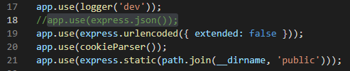
再來我希望 LineBot 能回應我打給它的字，所以把 webhook.js 改成這樣：1
2
3
4
5
6
7
8
9
10
11
12
13
14
15
16
17
18
19
20
21
22
23
24
25
26
27
28
29
30
31
32
33
34var express = require('express');
var router = express.Router();
console.log('webhook.js is working');
// linebot module
var linebot = require('linebot');
// linebot information
var bot = linebot({
channelId: 'YOUR_CHANNEL_ID',
channelSecret: 'YOUR_CHANNEL_SECRET',
channelAccessToken: 'YOUR_CHANNEL_ACCESS_TOKEN'
});
// linebot message event
bot.on('message', function (event) {
var userInput = event.message.text;
var botReply = '你剛剛說了: ' + userInput;
// reply to user
event.reply(botReply).then(data => {
// if reply success
console.log('Reply: ', message);
}).catch(error => {
// if something went wrong
console.log('Error: ', error)
});
});
var linebotParser = bot.parser();
router.post('/', linebotParser);
module.exports = router;
這邊會看到 linebot information 那邊要輸入 3 組類似代碼的東西，我們可以透過 Line Developers 後台取得 (https://developers.line.me/console/)。
到 Line 的後台網頁搜尋吧！
我們可以在 Basic information 中找到 Channel ID 和 Channel secret。
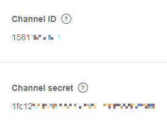
接著在 Messaging settings 中找到 Channel access token。
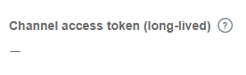
比較特別的是 Channel access token 一開始是空白的，要按右方的 issue 來產生一組新的 token 哦！
由於我們是第一次產生，token 要多久過期的問題設定 0 小時就可以了。
把三組代碼都填入程式碼內，就完成最簡單的邏輯囉！
在本地端測試 LineBot
這時候我們會心想：「剛剛把程式都寫好了，要趕緊來測試一下了，我們趕快把程式跟 LineBot 串接在一起吧！」
這時看到 LineBot 的串接的地方如何設定，會發現 LineBot 的串接需要有 HTTPS 的網址，而我們本地端的電腦正常來說不會有一個 HTTPS 的網址啊！
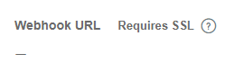
這時要使用一個服務 ngrok (https://ngrok.com/)。它能夠讓本地端的電腦，暫時有一個 HTTPS 的網址，至於細節怎麼做到就不說了，來看看怎麼用吧！
註冊和下載 ngrok
到 ngrok 的官網，按下 Get started for free，然後註冊一個帳號。
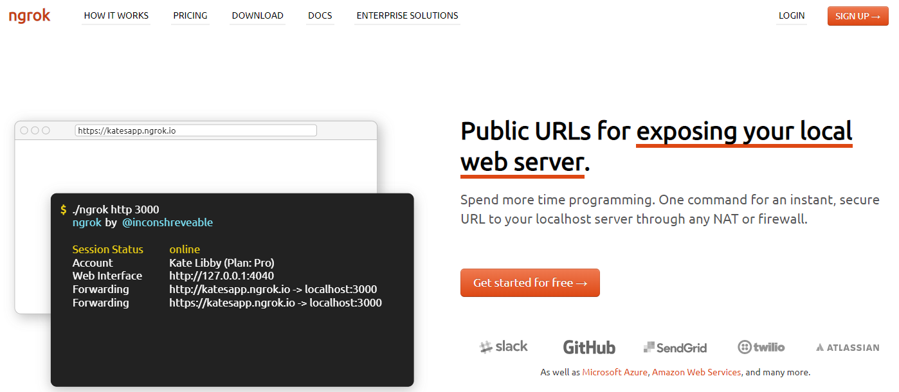
接著會到一個教你如何安裝的頁面，按照教學下載檔案、解壓縮檔案和連結帳號。
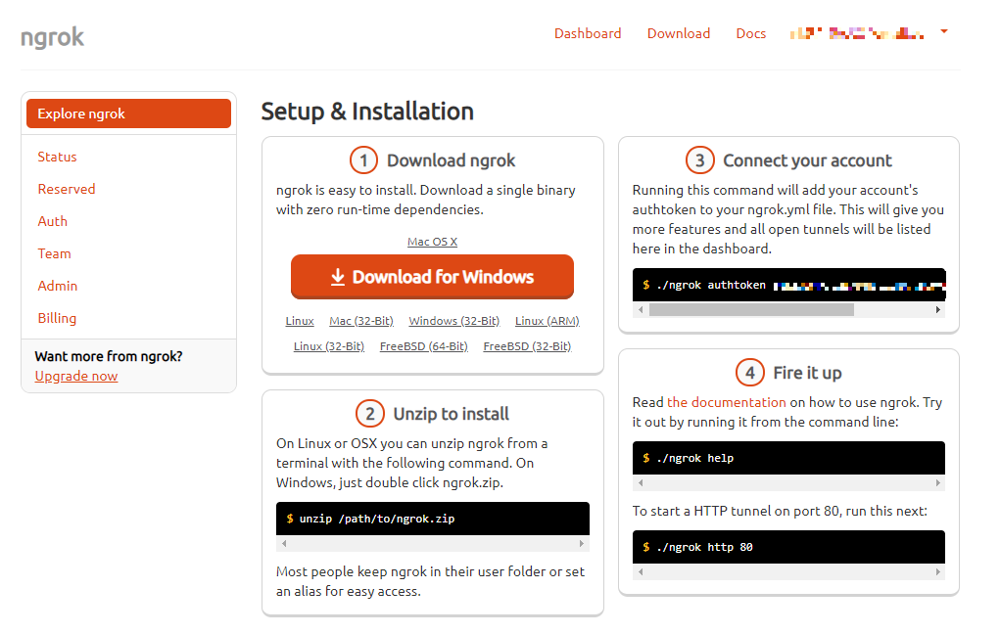
連結帳號
連結帳號這個步驟可能會有點難，步驟如下：
- 先確定剛剛下載的檔案，解壓縮後放在哪裡，例如我放在 D:\ngrok-stable-windows-amd64\ngrok.exe。
開另外一個 cmd 進入到剛剛下載的 ngrok.exe 放的資料夾位置。
1
2D:
cd ngrok-stable-windows-amd64輸入連結帳號的指令。
1
ngrok authtoken YOUR_TOKEN_ON_WEB
看到 “Authtoken saved to configuration file” 就代表成功了！
使用 ngrok 建立本地端 HTTPS 伺服器
我們要開始使用 ngrok 來建立本地端 HTTPS 伺服器囉！
首先我們要準備兩個 cmd 視窗，一個進到 LineBot 的資料夾，另一個進到 ngrok 的資料夾。
我們先用第一個 cmd 把 Node.js 執行起來，還記得嗎？指令 npm start。
再用另一個 cmd 執行 ngrok，把我們的 Node.js 伺服器變成 HTTPS 伺服器。1
2 ngrok http 3000
// 因為我們 Node.js 的 port 預設是使用 3000，所以不像是 ngrok 教學中寫的 80
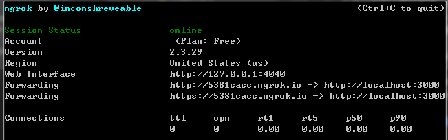
這邊要注意一點，順序不能錯！一定要先執行 Node.js，再用 ngrok 改成 HTTPS 伺服器！
然後我們試試看 ngrok 給我們的網址，像我這次得到的是 https://5381cacc.ngrok.io。
丟到瀏覽器上執行，如果有看到 Express 就代表成功囉！
跟 Line 串接在一起測試
我們回到 Line Developers 後台，把 Use webhooks 改成 Enabled，並在 Webhook URL 的地方填上網址，網址請輸入 “ngrok 給的網址/webhook”，例如筆者這次就要填入 “5381cacc.ngrok.io/webhook”。
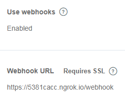
為什麼後面要多加 /webhook 呢？因為我們的 app.js 裡面有寫到 app.use('/webhook', webhookRouter);，這樣 LineBot 才能順利的使用我們 webhook.js 裡面寫的邏輯。
填寫完 webhook 的網址後，記得要按右方的 Verify 去驗證，看到 Success 之後，LineBot 就會把它收到的訊息丟到伺服器裡面囉！
事不宜遲，來測試看看吧！用 Line 對你的 LineBot 說句話看看！
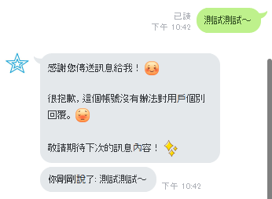
LineBot 有正確執行囉！但是要怎麼去掉那個基本回覆呢？很簡單，到 Line 的後台把 Auto-reply messages 關掉就可以囉！
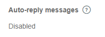
再測試一次看看吧！
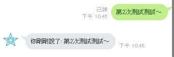
跟讓 Heroku 伺服器與 Line 串接在一起
終於到了這個階段了！我們目前有一台運作正常的 Heroku 伺服器，還有運作正常的程式碼。接下來就是再它們合體了。來吧！最後一步了！
部屬程式到 Heroku 上面
這邊的動作其實我們稍早已經做過一次了，不會太難！
打開一個新的 cmd，進入到 LineBot 的資料夾，輸入指令1
2
3
4 heroku login
git add .
git commit -am "line bot first submit"
git push heroku master
完成了之後，一樣可以點選 Open app 看看伺服器是否運作正常。
修改 Line 後台 Webhook URL
接著我們到 Line Developers 的後台網頁，修改 Webhook URL，改成 Heroku 的網址。
Heroku 的網址怎麼看？很簡單，按下 Open app 之後，瀏覽器上的網址就是 Heroku 的網址了！
修改完 URL 之後，別忘記也要按 Verify 測試一下！
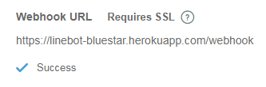
最後用 Line 測試看看
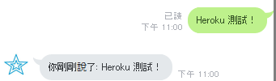
完成！現在 LineBot 已經和 Heroku 伺服器上的程式串接在一起了！
再次修改程式邏輯
我們再次修改一下程式的邏輯，改成判斷使用者輸入的文字，來決定回覆的訊息吧！
回到 webhook.js。1
2
3
4
5
6
7
8
9
10
11
12
13
14
15
16
17
18
19
20// linebot message event
bot.on('message', function (event) {
var userInput = event.message.text;
var botReply;
if (userInput.includes('你') && userInput.includes('誰')) {
botReply = '我是藍藍星星！';
} else {
botReply = '你剛剛說了: ' + userInput;
}
// reply to user
event.reply(botReply).then(data => {
// if reply success
console.log('Reply: ', message);
}).catch(error => {
// if something went wrong
console.log('Error: ', error)
});
});
只要使用者的文字中，同時包含了 “你” 和 “誰”，LineBot 就會回覆 “我是藍藍星星！”。
我們部屬到 Heroku 上試試看吧！指令就不再說了哦～
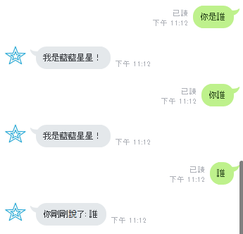
一些小提醒
當你部屬上 Heroku 之後，就不會在需要用到 ngrok 囉。不過它仍然是你本地端測試的利器，畢竟不可能天天沒 bug 嘛～ 出現 bug 的時候，你就會需要搭配 ngrok 來測試囉！記得用 ngrok 時，要去修改 Line 後台的 Webhook URL。
關於 LineBot 邏輯的部分，可以參考 linebot 這個 module。它還有除了 message 的 event 可以串接，可以好好拜讀一下文件，寫出更酷的 LineBot 邏輯！
URL: https://www.npmjs.com/package/linebot
結語
這篇文章寫了很多設定相關的教學，反而程式邏輯的部分都沒寫到多少。不過我認為最難、最容易卡住的就是設定了。我想設定都完成的話，接下來邏輯就是改改程式就好囉！而且程式正是我們該發揮創意的地方呀！
如果過程中遇到什麼地方卡住了，歡迎留言一起討論哦！